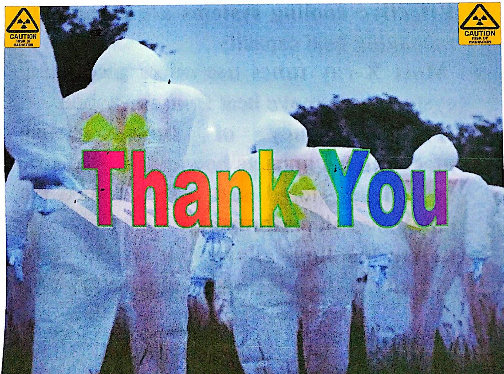

تسخين أنبوب الأشعة وتبريدهX-ray Tube Heating and Cooling
نظري · م04 · 4.6 دقيقةأقسام المحاضرة (5)
إنتاج الحرارة في أنبوب الأشعةHeat Production in X-ray Tubes
تسخين أنبوب الأشعة وتبريدهX-ray Tube Heating and Cooling
أ. إنتاج الحرارة في أنابيب الأشعةA. Heat Production in X-ray Tubes
- • Heat is generated primarily at the anode due to the bombardment of high-speed electrons.تتولّد الحرارة أساساً في الأنود بسبب قصفه بالإلكترونات عالية السرعة.
- • When electrons from the cathode strike the anode, their kinetic energy is transformed.عندما تصطدم الإلكترونات القادمة من الكاثود بالأنود، تتحوّل طاقتها الحركية.
- • A small fraction of this energy produces X-rays through the bremsstrahlung process and characteristic X-ray emission, but the vast majority (about 99%) results in heat.جزء صغير من هذه الطاقة يُنتج الأشعة السينية بعملية أشعة الكبح (bremsstrahlung) وانبعاث الأشعة السينية المميّزة (characteristic)، لكن الغالبية العظمى (حوالي 99%) تتحوّل إلى حرارة.
- • This high level of heat can cause damage to the anode if not dissipated properly.هذا المستوى العالي من الحرارة قد يُتلف الأنود إذا لم يُبدَّد بشكل صحيح.
السعة الحرارية والتبريدHeat Capacity and Cooling
ب. السعة الحرارية والتبريدB. Heat Capacity and Cooling
- • The heat capacity of the anode refers to the amount of heat it can absorb before its temperature rises to dangerous levels.السعة الحرارية للأنود (heat capacity) هي كمية الحرارة التي يستطيع امتصاصها قبل أن ترتفع حرارته إلى مستويات خطرة.
- • Anodes are typically made of tungsten due to its high melting point and excellent heat tolerance.تُصنع الأنودات عادةً من التنغستن بسبب درجة انصهاره العالية وتحمّله الممتاز للحرارة.
- • However, even tungsten anodes require adequate cooling mechanisms.ومع ذلك، حتى أنودات التنغستن تحتاج إلى آليات تبريد كافية.
- • Cooling can be achieved through conduction (via rotating anodes), convection (circulation of air or oil), or radiation (emitting infrared heat).يمكن تحقيق التبريد بالتوصيل (conduction) (عن طريق الأنودات الدوّارة)، أو بالحمل (convection) (دوران الهواء أو الزيت)، أو بالإشعاع (بثّ الحرارة على شكل أشعة تحت حمراء).
- • Modern X-ray tubes use several strategies to manage heat, including rotating anodes, which distribute the heat over a larger area, and oil-based cooling systems that dissipate the heat externally.أنابيب الأشعة الحديثة تستعمل عدة طرق للتحكم بالحرارة، منها الأنودات الدوّارة التي توزّع الحرارة على مساحة أكبر، وأنظمة التبريد بالزيت التي تبدّد الحرارة إلى الخارج.
- • The maximum heat storage of the tube is often expressed in terms of Heat Units (HU), and the cooling rate is essential to ensure the tube’s longevity.أقصى خزن للحرارة في الأنبوب يُعبَّر عنه غالباً بالوحدات الحرارية (HU)، ومعدّل التبريد ضروري لضمان طول عمر الأنبوب.
العوامل المؤثّرة في السعة الحراريةFactors Affecting the Heat Capacity
العوامل المؤثّرة في السعة الحراريةFactors Affecting the Heat Capacity
- • The heat capacity of an X-ray tube refers to its ability to absorb and store heat without reaching temperatures that could damage the tube components.السعة الحرارية لأنبوب الأشعة هي قدرته على امتصاص الحرارة وخزنها دون الوصول إلى درجات حرارة قد تُتلف مكوّنات الأنبوب.
- • Heat management is critical in maintaining the functionality and longevity of X-ray tubes.التحكم بالحرارة أمر حاسم للحفاظ على عمل أنابيب الأشعة وطول عمرها.
- • Several factors affect the heat capacity :هناك عدة عوامل تؤثّر في السعة الحرارية:
A. Material Composition
أ. تركيب المادة.
B. Anode Design
ب. تصميم الأنود.
C. Size and Surface Area
ج. الحجم ومساحة السطح.
D. Cooling Mechanisms
د. آليات التبريد.
E. Operational Factors
هـ. عوامل التشغيل.
المادة وتصميم الأنودMaterial Composition & Anode Design
أ. تركيب المادةA. Material Composition
- • The materials used in the construction of the X-ray tube, particularly the anode, play a significant role in determining the heat capacity.المواد المستعملة في صناعة أنبوب الأشعة، خصوصاً الأنود، لها دور كبير في تحديد السعة الحرارية.
- • Tungsten is a common material for the anode because of its high melting point (around 3422°C) and good heat tolerance.التنغستن مادة شائعة للأنود بسبب درجة انصهاره العالية (حوالي 3422 °م) وتحمّله الجيد للحرارة.
- • Other materials such as molybdenum or graphite can also be used, depending on the specific application and desired heat capacity.يمكن أيضاً استعمال مواد أخرى مثل الموليبدنوم (molybdenum) أو الغرافيت (graphite)، حسب التطبيق المحدد والسعة الحرارية المطلوبة.
ب. تصميم الأنود (دوّار مقابل ثابت)B.Anode Design (Rotating vs. Stationary)
- • The design of the anode is crucial. Rotating anodes are preferred in high-performance X-ray tubes because they allow the heat to spread over a larger surface area.تصميم الأنود مهم جداً. الأنودات الدوّارة مفضّلة في أنابيب الأشعة عالية الأداء لأنها تسمح بانتشار الحرارة على مساحة سطح أكبر.
- • This rotation prevents localized overheating and increases the overall heat capacity of the system compared to stationary anodes, which have limited surface area for heat dissipation.هذا الدوران يمنع السخونة الموضعية الزائدة ويزيد السعة الحرارية الكلية للمنظومة مقارنةً بالأنودات الثابتة التي لها مساحة سطح محدودة لتبديد الحرارة.
الحجم والتبريد وعوامل التشغيلSize, Cooling & Operational Factors
ج. الحجم ومساحة السطحC.Size and Surface Area
- • The size of the anode directly affects its heat capacity.حجم الأنود يؤثّر مباشرةً في سعته الحرارية.
- • A larger anode provides more surface area to distribute and dissipate heat, increasing its ability to handle higher workloads.الأنود الأكبر يوفّر مساحة سطح أكبر لتوزيع الحرارة وتبديدها، فتزيد قدرته على تحمّل أحمال عمل أعلى.
- • Moreover, the geometry of the anode, such as grooves or other surface modifications, can also enhance heat dissipation and improve the heat capacity.كما أن شكل الأنود الهندسي، مثل الأخاديد أو التعديلات الأخرى على السطح، يمكن أن يحسّن تبديد الحرارة ويزيد السعة الحرارية.
د. آليات التبريدD. Cooling Mechanisms
- • Effective cooling systems are essential to managing heat capacity.أنظمة التبريد الفعّالة ضرورية للتحكم بالسعة الحرارية.
- • Most X-ray tubes use oil or air cooling systems to remove heat from the anode.معظم أنابيب الأشعة تستعمل أنظمة تبريد بالزيت أو الهواء لإزالة الحرارة من الأنود.
- • The efficiency of these cooling mechanisms impacts how quickly the tube can release stored heat, which affects the tube’s overall performance.كفاءة آليات التبريد هذه تؤثّر في سرعة تخلّص الأنبوب من الحرارة المخزونة، وهذا يؤثّر في أدائه العام.
- • Better cooling allows for higher heat capacity, as heat is dissipated more rapidly.التبريد الأفضل يسمح بسعة حرارية أعلى، لأن الحرارة تتبدّد بسرعة أكبر.
هـ. عوامل التشغيلE. Operational Factors
- • The heat capacity is also influenced by how the X-ray tube is operated.تتأثّر السعة الحرارية أيضاً بطريقة تشغيل أنبوب الأشعة.
- • High kV (kilovolt) settings and prolonged exposure times generate more heat, putting additional strain on the system.إعدادات kV (الكيلوفولت) العالية وأزمان التعرّض الطويلة تولّد حرارة أكثر، فتضع عبئاً إضافياً على المنظومة.
- • Using short pulses of radiation or intermittent exposures can help manage the heat load and prevent the tube from exceeding its heat capacityاستعمال نبضات قصيرة من الإشعاع أو تعرّضات متقطّعة يساعد في التحكم بالحمل الحراري ويمنع الأنبوب من تجاوز سعته الحرارية.

المحاضرة مسموعة
نص الأستاذ بالإنكليزي مثل الأصل · 4.6 دقيقة. اضغط أي جملة تسمعها، أو مصطلح منقّط تسمع لفظه ومعناه.
Heat Production in X-ray Tubesإنتاج الحرارة في أنبوب الأشعة
Heat Production in X-ray Tubes
X-ray Tube Heating and Cooling
A. Heat Production in X-ray Tubes
Heat is generated primarily at the anode due to the bombardment of high-speed electrons.
When electrons from the cathode strike the anode, their kinetic energy is transformed.
A small fraction of this energy produces X-rays through the bremsstrahlung process and characteristic X-ray emission, but the vast majority (about 99%) results in heat.
This high level of heat can cause damage to the anode if not dissipated properly.
Heat Capacity and Coolingالسعة الحرارية والتبريد
Heat Capacity and Cooling
B. Heat Capacity and Cooling
The heat capacity of the anode refers to the amount of heat it can absorb before its temperature rises to dangerous levels.
Anodes are typically made of tungsten due to its high melting point and excellent heat tolerance.
However, even tungsten anodes require adequate cooling mechanisms.
Cooling can be achieved through conduction (via rotating anodes), convection (circulation of air or oil), or radiation (emitting infrared heat).
Modern X-ray tubes use several strategies to manage heat, including rotating anodes, which distribute the heat over a larger area, and oil-based cooling systems that dissipate the heat externally.
The maximum heat storage of the tube is often expressed in terms of Heat Units (HU), and the cooling rate is essential to ensure the tube’s longevity.
Factors Affecting the Heat Capacityالعوامل المؤثّرة في السعة الحرارية
Factors Affecting the Heat Capacity
Factors Affecting the Heat Capacity
The heat capacity of an X-ray tube refers to its ability to absorb and store heat without reaching temperatures that could damage the tube components.
Heat management is critical in maintaining the functionality and longevity of X-ray tubes.
Several factors affect the heat capacity :
A. Material Composition
B. Anode Design
C. Size and Surface Area
D. Cooling Mechanisms
E. Operational Factors
Material Composition & Anode Designالمادة وتصميم الأنود
Material Composition & Anode Design
A. Material Composition
The materials used in the construction of the X-ray tube, particularly the anode, play a significant role in determining the heat capacity.
Tungsten is a common material for the anode because of its high melting point (around 3422°C) and good heat tolerance.
Other materials such as molybdenum or graphite can also be used, depending on the specific application and desired heat capacity.
B.Anode Design (Rotating vs. Stationary)
The design of the anode is crucial. Rotating anodes are preferred in high-performance X-ray tubes because they allow the heat to spread over a larger surface area.
This rotation prevents localized overheating and increases the overall heat capacity of the system compared to stationary anodes, which have limited surface area for heat dissipation.
Size, Cooling & Operational Factorsالحجم والتبريد وعوامل التشغيل
Size, Cooling & Operational Factors
C.Size and Surface Area
The size of the anode directly affects its heat capacity.
A larger anode provides more surface area to distribute and dissipate heat, increasing its ability to handle higher workloads.
Moreover, the geometry of the anode, such as grooves or other surface modifications, can also enhance heat dissipation and improve the heat capacity.
D. Cooling Mechanisms
Effective cooling systems are essential to managing heat capacity.
Most X-ray tubes use oil or air cooling systems to remove heat from the anode.
The efficiency of these cooling mechanisms impacts how quickly the tube can release stored heat, which affects the tube’s overall performance.
Better cooling allows for higher heat capacity, as heat is dissipated more rapidly.
E. Operational Factors
The heat capacity is also influenced by how the X-ray tube is operated.
High kV (kilovolt) settings and prolonged exposure times generate more heat, putting additional strain on the system.
Using short pulses of radiation or intermittent exposures can help manage the heat load and prevent the tube from exceeding its heat capacity
كل أسئلة المحاضرة: السؤال إنكليزي وتحته عربي، وكل خيار بلغتين، والجواب الصحيح معلّم ويّاه «ليش صح» · 0.2 MB
تحميل الملف فتحاضغط أي مصطلح منقّط تسمع لفظه ومعناه.
PDF ثنائي اللغة: نص الأستاذ + الترجمة + الخلاصة + الأسئلة · 0.8 MB
تحميل الملفإنكليزي وتحته عربي، والجواب الصحيح معلّم · 0.2 MB
تحميل أسئلة MCQ